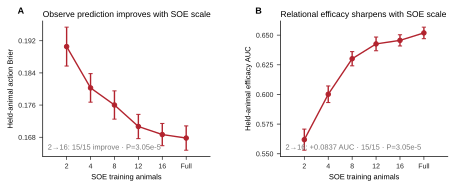
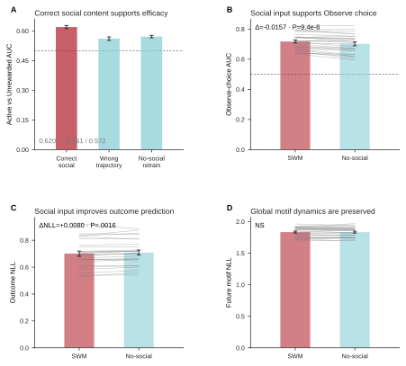
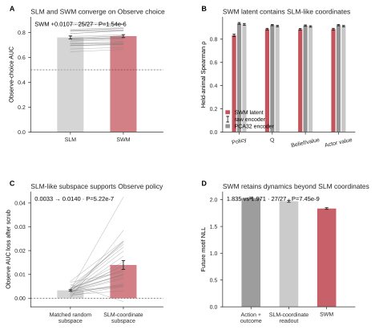
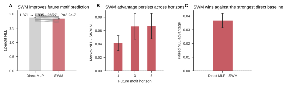
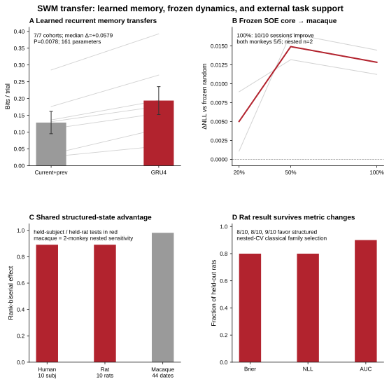
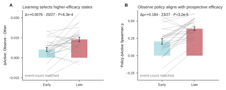
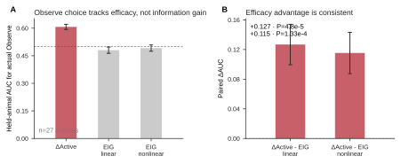
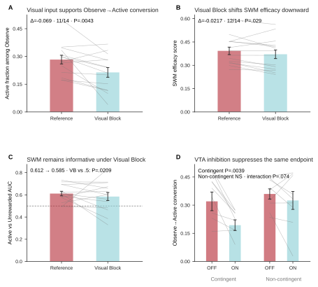
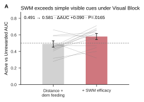
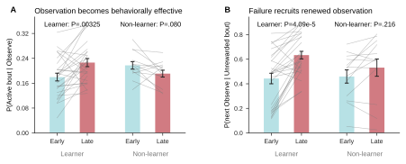

SAME REAL PRESENT
SOCIAL WORLD MODEL / GOAL-DIRECTED SOCIAL SAMPLING / VIRTUAL MOUSE
Social World Model (SWM) of goal-directed social sampling
A data-driven predictive model links real social state, sampling choices, future outcomes, and behavioral dynamics. The Virtual Mouse atlas below provides exact replay of the real events used to interrogate the model.
Social orient—
Social observation P—
Social distance—
Head directions OBS / DEM—
Hero example: latest Module 1.4 Virtual Mouse paired with exact frozen-v85 behavioral-space coordinates.
Explore the motifs
The behavioral space is organized into 12 motifs. Use Social orient 1/2/4/7 to see the established motif structure independent of model threshold, then switch to Observation model probability to see the conservative frame-wise v5 confidence layer. Each clickable run reports Social orient, Social observation probability, nose-to-nose Social distance, and the OBS / DEM head directions, while retaining the stricter validated observation-bout label separately. Click any run to play the exact Virtual Mouse segment, click empty space to place the comparison circle, drag to pan, and scroll or pinch to zoom.
HELD-OUT EVIDENCE · ANM4 D139
Social World Model (SWM)
Starting from the same real present, SWM accurately predicts the recorded future, and this prediction depends on the correct social content. Population-level held-animal results below establish that the computation generalizes across animals.
A SWM learns a predictive relational state
P(Observe)
P(outcome)
P(next motif)
ztlatent social state
at + ot→
zt+1predicted state
at+1 + ot+1→
zt+2predicted state
Observed xtself state · demonstrator state · recent action/outcome history
→
Encoder + GRUposterior state from real sequence
→
The 5-event view is factorized from policy + outcome heads. The 12-motif state is a future target, not an encoder input.
B Same present: social information determines the predicted future
Same recorded presentANM4 D139 · held-out animal
NORMAL
All observed social channels
Frozen posterior → accurate future prediction
SOCIAL CONTROL
Matched wrong social trajectory / no-social retrain
Performance drops on the same held-out animals
6 / 8SWM top-1 motif steps · accurate future prediction
0 / 8Markov top-1 motif steps · near-zero prediction
0.620 → 0.561 / 0.572Efficacy AUC · wrong social content / no-social retraining causes a strong drop
Core evidence · 27 held-out animals
Population-level held-animal results establish that SWM learns a generalizable prospective efficacy state that depends on the correct social content, rather than a single-example or simple-current-cue effect.
In-domain scale strengthens prospective social efficacy
IN-DOMAIN SCALE
0.562 → 0.646
Increasing SOE training animals from 2 to 16 continuously improves held-animal efficacy AUC; all 15 matched comparisons improve (P=3.05×10−5).
PROSPECTIVE EFFICACY
AUC 0.620
At the same latent state, ΔActive predicts whether an actual Observe becomes Active rather than Unrewarded; 27/27 animals are above chance.
CORRECT SOCIAL CONTENT
0.620 → 0.561 / 0.572
Matched wrong social trajectories and no-social retraining both strongly weaken efficacy; 26/27 animals decrease.
Core result: more in-domain data sharpen the social-efficacy representation, and only the correct social content sustains that state. SWM therefore learns a relational state tied directly to future successful feeding.


SWM ↔ SLM computational bridge

Computational bridge: without any explicit SLM structure, SWM forms decision coordinates aligned with SLM and embeds them in a richer predictive state space.
Future behavior prediction · 27 held-out animals

Transferable learned state · recurrent memory and cross-species tests
LEARNED RECURRENT MEMORY
7 / 7 cohorts
A 4-D GRU with only 161 parameters, trained from raw action/outcome and exogenous cues, beats the strongest current+previous-trial feedforward control in every held-out experimental cohort. Median paired gain = +0.0579 bits/trial (P=.0078).
FROZEN SOE CORE → MACAQUE
10 / 10 sessions
On DANDI001435, a frozen SOE recurrent core beats an equally frozen random core at 100% target data (mean ΔNLL=+0.01284); both monkeys are positive in 5/5 held-out sessions. Session statistics are nested within two monkeys.
EXTERNAL STATE VALIDATION
Human + Rat
The structured multiscale state beats strong matched comparators in 8/10 held-out human subjects and 8/10 held-out rats; in rat, the advantage also holds for NLL and for AUC in 9/10 animals after nested classical-RL family selection.

Model-level conclusion: SWM is not only a better within-task classifier. It learns a compact recurrent state that carries history across cohorts, and part of that learned dynamics can be reused across species without fine-tuning the recurrent core.
v18 audited transfer JSON · paired recurrent-memory test · frozen-core source table · rat nested-CV source table
LEARNING DEPENDENCE · 27 HELD-OUT LEARNERS
Learning aligns Observe policy with prospective social efficacy
SWM provides a unified computational account: ΔActive = P(Active | zt, Observe) − P(Active | zt, Other). Across training, animals increasingly choose states in which social sampling is predicted to increase future successful Active feeding.
PROSPECTIVE VALUE SELECTION
0.006 → 0.014
Mean ΔActive contrast on actual Observe vs non-Observe states. Late − early = +0.00757; 20/27 increase; P=5.66×10−4.
POLICY–VALUE ALIGNMENT
ρ 0.205 → 0.388
Within-animal correlation between model P(Observe) and ΔActive. 23/27 increase; Δρ=+0.183; P=3.64×10−5.
OBSERVE EFFICACY
AUC 0.620
ΔActive predicts whether an actual Observe becomes Active rather than Unrewarded (AUC 0.620; 27/27 animals above chance) and adds +0.088 AUC over distance + demonstrator feeding.
SOCIAL DEPENDENCE
0.620 → 0.561 / 0.572
Day- and duration-matched wrong social trajectories reduce efficacy AUC to 0.561 (26/27, P=1.49×10−8); a separately retrained no-social SWM gives 0.572 (26/27, P=2.29×10−6).


CORE DISCOVERY
Animals do not Observe when information is merely abundant; they Observe when social information is predicted to improve future feeding success. Learning progressively couples social sampling to prospective efficacy.
STRICT COMPUTATIONAL TEST
ΔActive is computed prospectively at the same latent state before Observe, and expected information gain is also estimated prospectively without access to the subsequently observed social content. The efficacy-over-information result therefore does not arise from post-hoc leakage.
Biological closure · visual input and VTA converge on Observe→Active conversion

Under Visual Block, SWM still exceeds immediately visible cues

Supporting descriptive transition results
Only the two transition effects needed to anchor the behavioral phenotype are retained here. The full 5×5 transition heatmaps remain in source analysis, because they add description but not a stronger mechanistic explanation.

Click any dot to play · click/drag the circle to compare · drag elsewhere to pan · scroll/pinch to zoom
Selected examples
Click a point
Motif dictionary
Each motif is defined in the frozen v85 behavioral atlas. Social Observation statistics use the frame-wise model inference/probability; the stricter merged label is retained separately for validating representative video bouts.